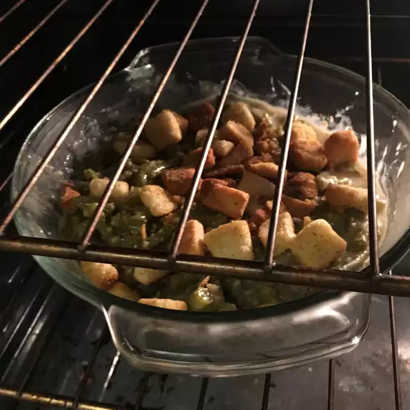

Green Bean Casserole
>
Ingredients
- 1 can (10 1/2 ounces) Condensed Cream of Mushroom Soup or 98% Fat Free Cream of Mushroom Soup or Condensed Unsalted Cream of Mushroom Soup
- 1/2 cup milk
- 1 teaspoon soy sauce
- 4 cups cooked cut green beans
- 1 1/3 cups French's® French Fried Onions (amount divided in recipe steps below)
Steps
- Heat oven 350 degrees. Stir the soup, soy sauce, milk, beans and 2/3 cup of onions in a 1 1/2-quart casserole.
- Bake for 25 minutes or til hot. Stir the bean mixture. Now sprinkle the remaining 2/3 cup onions.
- Bake for an additional 5 minutes or until the onions are golden brown.